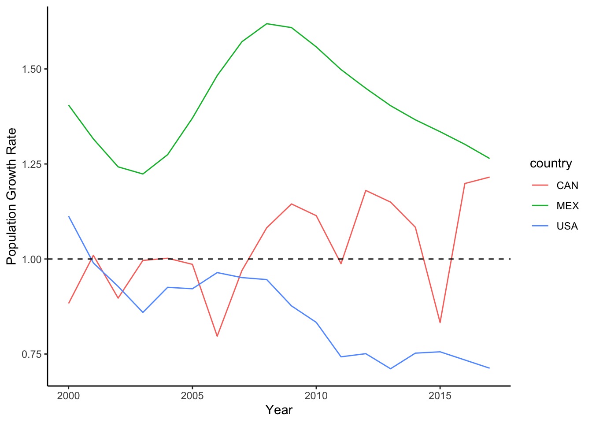
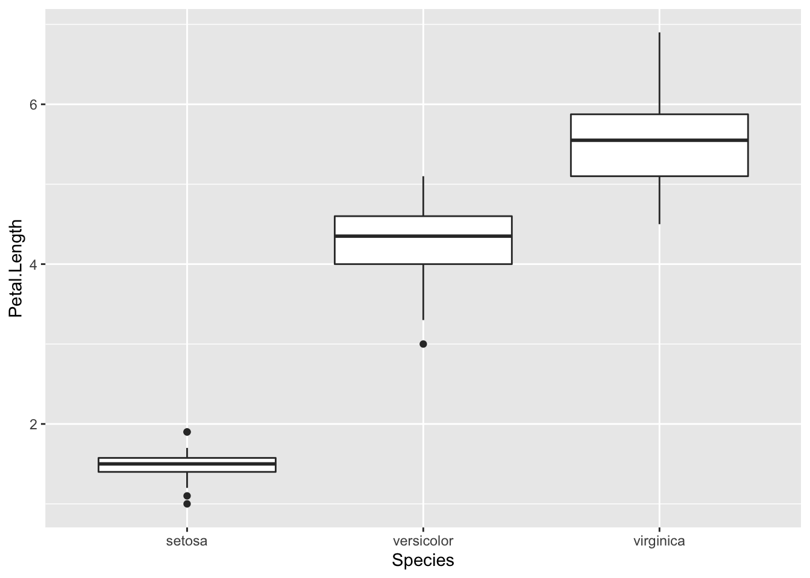

2.2 Loading the package
You now have the package downloaded on your computer, but to actually
use it, you have to load the package. We can load the entire
tidyverse package (or, if you prefer, you can just load the
tidyr package).
library(tidyverse)
## ── Attaching packages ─────────────────────────────────────── tidyverse 1.3.1 ──
## ✔ ggplot2 3.3.6 ✔ purrr 0.3.4
## ✔ tibble 3.1.7 ✔ dplyr 1.0.8
## ✔ tidyr 1.2.0 ✔ stringr 1.4.0
## ✔ readr 2.1.2 ✔ forcats 0.5.1
## ── Conflicts ────────────────────────────────────────── tidyverse_conflicts() ──
## ✖ dplyr::filter() masks stats::filter()
## ✖ dplyr::lag() masks stats::lag()
Two important thing to notice here. First, the
message tells you what packages were actually loaded as part of the
tidyverse “metapackage”. You see that this includes 8 packages:
ggplot2,tibble, tidyr, readr, purrr, dplyr, stringr, and forcats.
Second, the message tells you that there are two functions in the
dplyr package that conflict with existing functions:
filter() and lag(). This is sometimes very
important to know! This means that the filter() function
works differently before and after loading this package.
2.3. Getting the package documentation
When I’m first learning a package, I often start by pulling up the
documentation for it. You can do this by running
library(help="packagename").
Let’s do this with the tidyr package:
library(help="tidyr")
A new tab will open in the script editor window with the text
documentation of the package, which includes info like version, authors,
brief description, the homepage url, etc. Then, you will see the “index”
section, which will list all of the functions and other objects that
are included in this package.
You can learn about each function or object by using ?
in front of the name. Try it out:
?replace_na
?pivot_longer
?billboard
?relig_income
In this case, you will see that the package includes not only
functions, but also sample datasets (billboard and
relig_income being two of them). Get used to pulling up the
documentation whenever you are learning to use a new package!
Some things to know about
getting started with ‘tidyverse’
Pipe Operator (%>%): tidyverse makes
use of the pipe operator %>%, which allows you to carry
over the output of one function to the next function. This can make
series of data manipulation sequences much more efficient.
Tibbles: “tibble” is a special class of dataframe
that is used in tidyverse. It is largely the same as a dataframe but it
has some features (or rather, lack of features) that make for ‘defensive
coding’. That is, it forces you to avoid dangerous operations, such as
changing variable names or types (you have to explicitly do this) or
allow “partial matching”.
To learn more about tibbles, start here
pop=world_bank_pop %>% pivot_longer(-c(country,indicator), names_to="year") %>% mutate(year=as.numeric(year)) %>% dplyr::filter(country=="CAN" | country=="USA" | country=="MEX") %>% dplyr::filter(indicator=="SP.POP.GROW") %>% mutate(pop.growth=value)
ggplot(pop, aes(x=year, y=pop.growth, color=country)) +
geom_line() +
theme_classic() +
geom_hline(aes(yintercept=1), linetype=2) +
ylab("Population Growth Rate") +
xlab("Year")

d1=world_bank_pop %>% dplyr::filter(indicator=="SP.URB.TOTL" | indicator=="SP.POP.TOTL") %>%
select(country, indicator, `2017`) %>%
pivot_wider(., id_cols=country, names_from=indicator, values_from=`2017`)
ggplot(d1, aes(x=SP.POP.TOTL, y=SP.URB.TOTL)) +
geom_point() +
scale_x_continuous(trans="log") +
scale_y_continuous(trans="log") +
xlab("Total Population Size") +
ylab("Urban Population Size") +
theme_bw()
## Warning: Removed 4 rows containing missing values (geom_point).

ggplot(iris, aes(x=Species, y=Petal.Length)) +
geom_boxplot()

iris %>% group_by(Species) %>% summarise(mean.sepal.length=mean(Sepal.Length), sd.sepal.length=sd(Sepal.Length))
## # A tibble: 3 × 3
## Species mean.sepal.length sd.sepal.length
## <fct> <dbl> <dbl>
## 1 setosa 5.01 0.352
## 2 versicolor 5.94 0.516
## 3 virginica 6.59 0.636